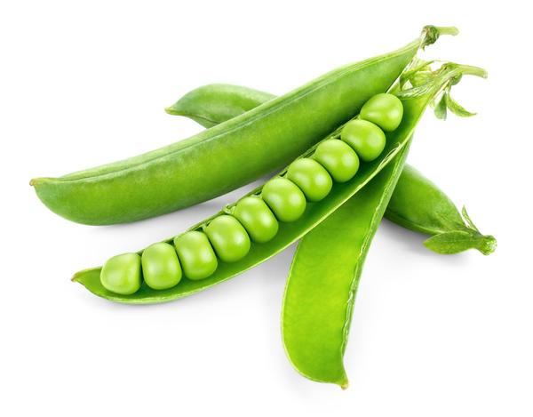

Pea
A pea, although treated as a vegetable in cooking, is botanically a fruit; the term is most commonly used to describe the small spherical seeds. It is a cool-season vegetable crop. The seeds may be planted as soon as the soil temperature reaches 10 °C, with the plants growing best at temperatures of 13 °C to 18 °C. They do not thrive in the summer heat of warmer temperate and lowland tropical climates, but do grow well in cooler high altitude tropical areas. Peas grow best in slightly acid, well-drained soils.

Pea